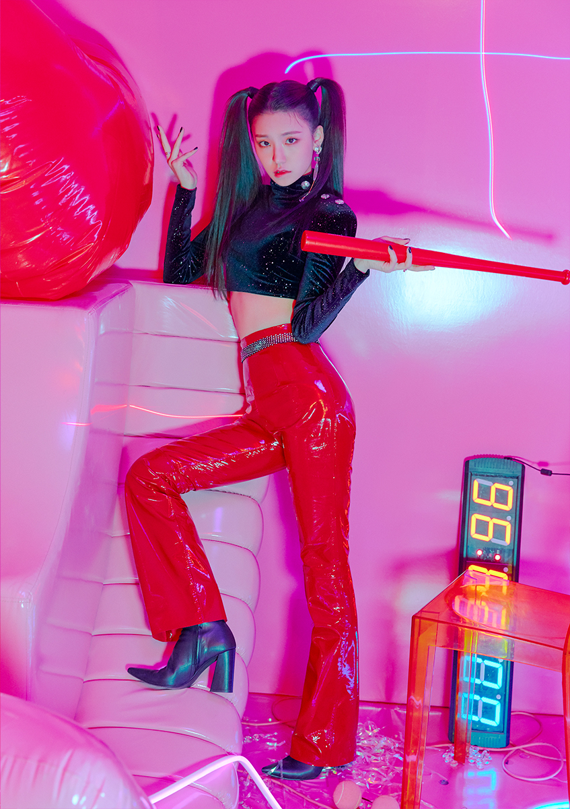
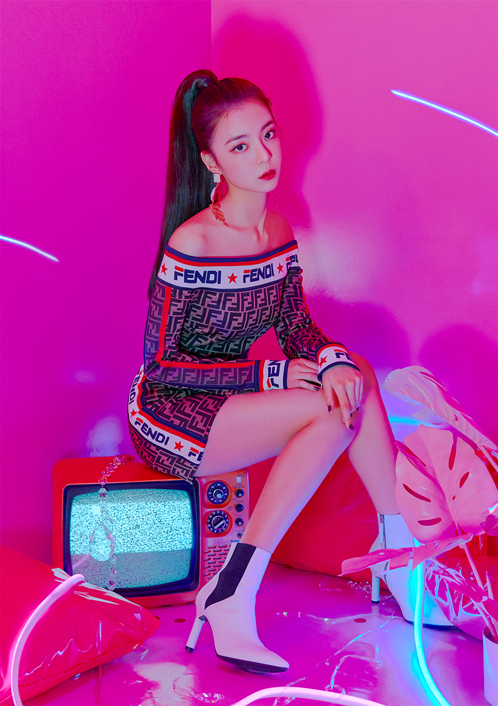
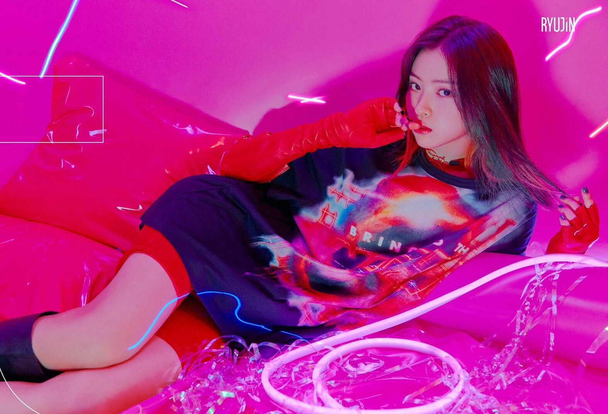
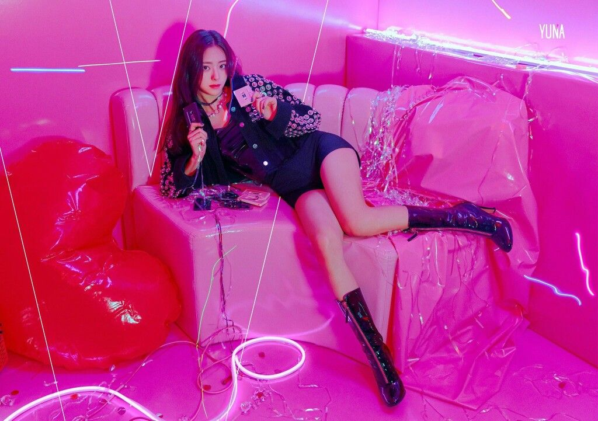

Itzy (stylized in all caps; Korean: 있지; RR: Itji; MR: Itchi) is a South Korean girl group formed by JYP Entertainment, consisting of members Yeji, Lia, Ryujin, Chaeryeong, and Yuna.
Yeji

Born: May 26, 2000 (age 21 years), Wansan-gu, Jeonju-si, South Korea
Height: 1.7 m
Full name: Hwang Ye-ji
Lia

Born: July 21, 2000 (age 21 years), Bucheon-si, South Korea
Height: 1.62 m
Full name: Choi Jisu
Ryujin

Born: April 17, 2001 (age 20 years), Chuncheon-si, South Korea
Height: 1.64 m
Full name: Shin Ryu Jin
Chaeryeong
Born: June 5, 2001 (age 20 years), Yongin-si, South Korea
Height: 1.68 m
Full name: Lee Chae Ryeong
Yuna

Born: December 9, 2003 (age 17 years), Wonju-si, South Korea